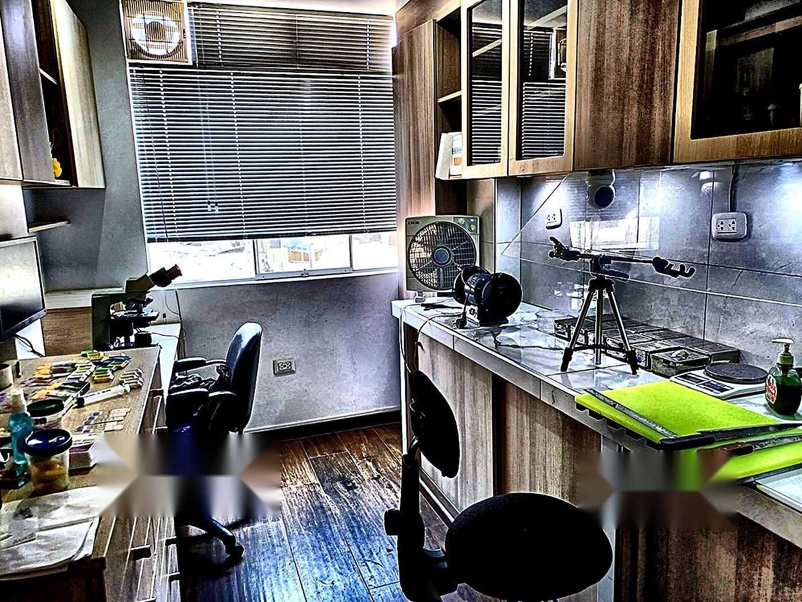
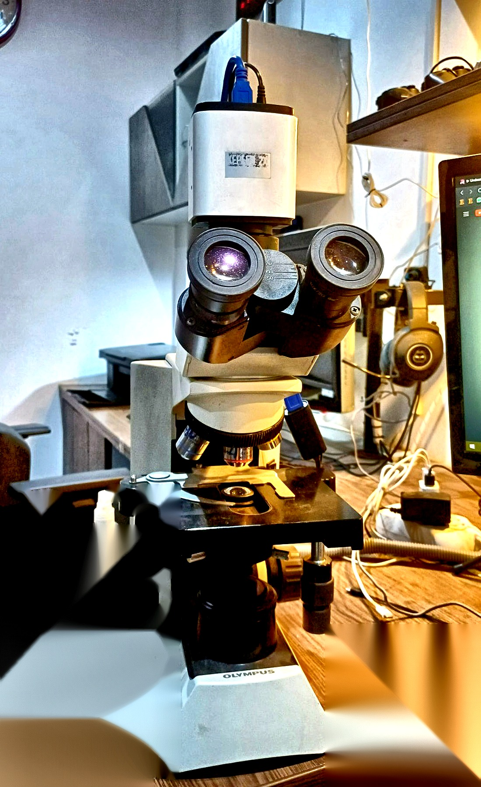
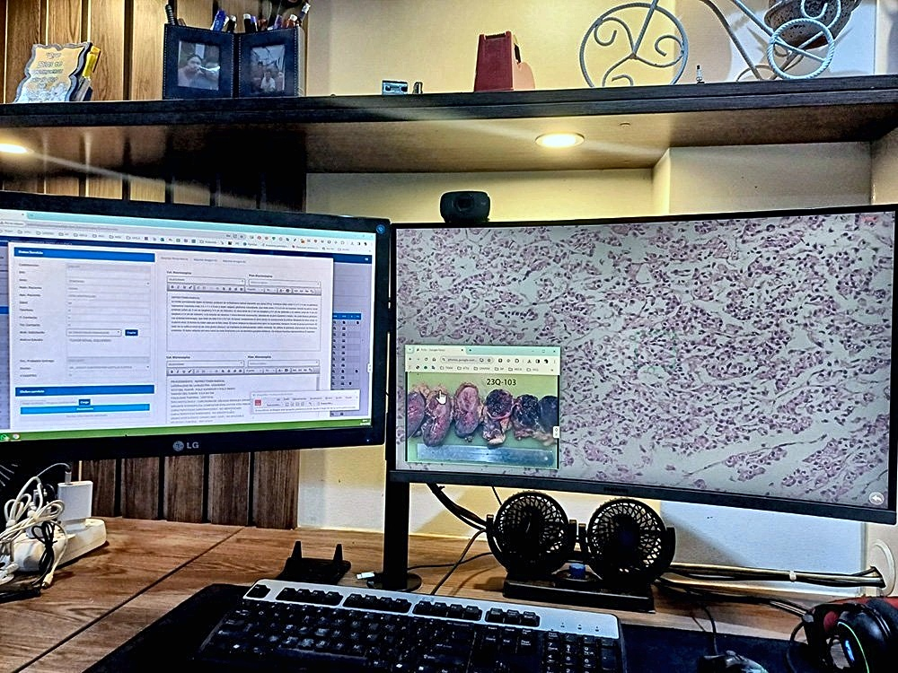
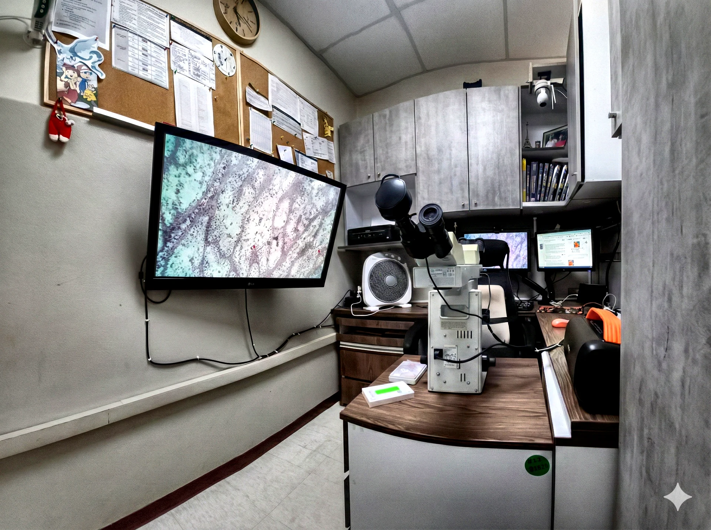
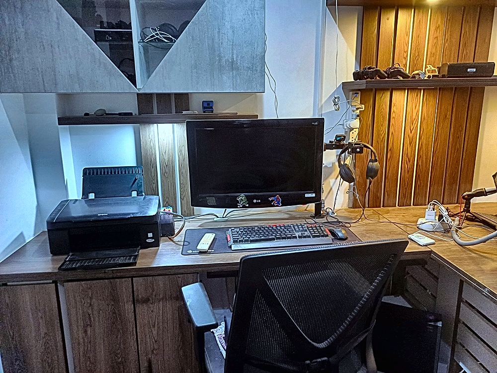
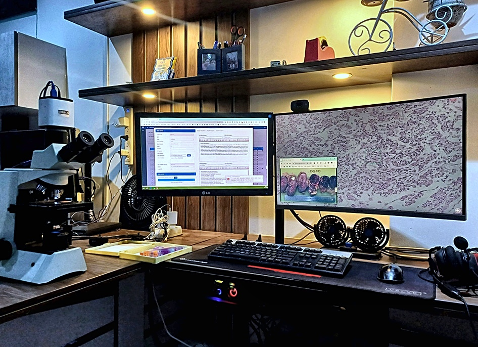

Dirigido por el Dr. Joseph C. Castillo Cuenca (CMP 56435 / RNE 029291). Certeza médica incuestionable con microscopía digital gigapíxel a 40x, trazabilidad de muestras sin pérdida y copilotaje bayesiano de inmunohistoquímica.
No te preocupes por el trámite técnico. Recogemos tu frasco con formol en cualquier distrito de Lima o te orientamos paso a paso para enviarlo seguro vía Olva Courier desde provincias. Recibe tu informe oficial firmado digitalmente en 48 a 72 horas con explicación comprensible.
Navega láminas virtuales gigapíxel tal como lo hace el patólogo en el microscopio digital. Arrastra para desplazarte, usa la rueda o el slider para hacer Deep Zoom hasta 40x y activa el copilotaje algorítmico de IA en tiempo real.
Diagnóstico Histológico: Adenocarcinoma Acinar de Próstata, Score Gleason 4+3 = 7 (Patrón 4 cribiforme 65%, Patrón 3 35%), Grupo Grado ISUP 3. Invasión perineural focal observada en cilindro apical derecho.
Visualiza el recorrido milimétrico de la muestra biológica: desde el frasco rotulado en quirófano hasta el cassette milimetrado y la bóveda digital con custodia legal de 20 años sin pérdida física.
Formol neutro al 10% inmediato con isquemia fría < 30 min. Sellado hermético con código único de paciente.
Corte milimétrico en estación macro con tinta china de márgenes. Grabado láser DataMatrix indeleble en biocassette.
Inclusión en parafina de alta pureza a 56°C. Corte ultrafino en microtomo Leica y tinción automatizada H&E.
Digitalización física a 0.25 µm/px. Generación de huella criptográfica SHA-256 inmutable de la lámina virtual.
Almacenamiento RAID físico local 20 años. Firma digital certificada CMP/RNE y despacho automático en 48-72h.
La muestra tisular extraída por el cirujano es recibida en recipiente estanco con formol neutro tamponado al 10% (pH 7.0 - 7.4). El tiempo de isquemia fría se registra estrictamente (< 30 minutos) para evitar cualquier artefacto de autólisis que comprometa la morfometría celular posterior.
Resuelve dilemas patológicos de alta dificultad diagnóstica. Marca los anticuerpos disponibles como positivos (+), negativos (-) o indeterminados (?) y observa el recálculo dinámico de probabilidades bayesianas.
El fenotipo con reactividad intensa a PAX8 y CD10 junto a negatividad para CK7 descarta con 98% de certeza un Oncocitoma o un Carcinoma Cromófobo. Sugiere correlación con estadificación tumoral Fuhrman/ISUP.
Sin costos ocultos. Informes detallados con microfotografías a color, clasificación CAP/AJCC y conducta sugerida.
Muestras gástricas, pólipos colónicos, dermatopatología (punch, rasurado, husos de piel), cuello uterino, endometrio y mucosa oral.
Mapeo individualizado cilindro por cilindro con Score Gleason y Grupos Grado ISUP/OMS para guiar el tratamiento urológico.
Prostatectomías radicales, morcelados HoLEP/ThuLEP, mastectomías, gastrectomías, colectomías y disecciones ganglionares.
Papanicolaou cervicovaginal (Bethesda), citología en base líquida, BAAF de tiroides y mama, y paneles de anticuerpos IHQ.
¿Por qué cirujanos, clínicas y familias en todo el Perú confían sus biopsias en nosotros?
| Parámetro de Calidad | Laboratorio Convencional | JC PATH LAB (Dr. Joseph Castillo) |
|---|---|---|
| Tiempo de Entrega Biopsias Menores | 7 a 15 días hábiles | 48 a 72 horas garantizadas |
| Piezas Oncológicas Complejas | 15 a 30 días hábiles | 4 a 5 días hábiles |
| Digitalización Whole Slide Imaging | Inexistente o nubes ajenas lentas | Servidor WSI Físico Propio (40x Gigapíxel) |
| Morfometría e Inteligencia Artificial | Cero IA (lectura manual única) | Copiloto IA 40x (Doble lectura de atipia nuclear) |
| Estudio Fotográfico de Márgenes | Fotos estáticas en blanco y negro | Visor 360° con Tinta China Quirúrgica |
| Acceso a Informes para Cirujanos | Papel físico impreso tardío | App Móvil con despacho en PDF en tiempo real |
Nuestra logística aprovecha el tiempo de tránsito biológico: el traslado de 48 a 72 horas vía Olva Courier se integra perfectamente con el tiempo estándar de fijación en formol neutro al 10%. La muestra llega a Lima fijada de manera óptima para el tallado y procesamiento inmediato.
Te enviamos el instructivo formal en PDF y la guía de rotulación para dejarla en la agencia Olva Courier o Shalom de tu ciudad.
Solicitar Envío desde ProvinciaFotografía pericial de nuestra sede central: mesa de tallado macroscópico, microscopía óptica Olympus, estaciones diagnósticas duales y sala de lectura clínica.

01 · MacroscopíaEstación completa de procesamiento con tabla de corte, cuchillos quirúrgicos, balanza digital de precisión, bandejas de acero quirúrgico y campana de extracción de vapores.

02 · Óptica OlympusÓptica Plan Achromat de investigación con torreta pentarradial y cámara digital Kepler/Moticam conectada por interfaz USB para digitalización histológica de alta resolución.

03 · Estación DualCorrelación diagnóstica simultánea: monitor panorámico para visualización de biopsias en alta resolución y monitor secundario para redacción del informe clínico.

04 · Sala de LecturaPantalla mural de alta fidelidad y microscopio multi-cabezal para discusión anatomoclínica, docencia médica y consenso en biopsias oncológicas complejas.

05 · Despacho MédicoMódulo de dirección pericial, emisión de informes oficiales firmados con código QR y archivo inmutable de bloques de parafina y laminillas histológicas.

Especialista con dedicación exclusiva al diagnóstico anatomopatológico, uropatología oncológica y patología digital. Líder en la implementación de la primera estación Whole Slide Imaging y copiloto de morfometría algorítmica en Lima Norte.
Las biopsias quirúrgicas menores (endoscópicas gástricas, piel, cuello uterino) se entregan en 48 a 72 horas. Las piezas quirúrgicas oncológicas complejas o biopsias de próstata Tru-Cut requieren entre 72 horas y 5 días hábiles debido a los tiempos indispensables de fijación en formol y procesamiento especial.
La muestra debe sumergirse inmediatamente después de la toma en un frasco con formol neutro al 10% (volumen de formol de 5 a 10 veces el tamaño de la muestra) herméticamente sellado. No se debe usar alcohol ni agua. Coordinamos el recojo motorizado en Lima o el envío por Olva Courier en provincia.
La digitalización Whole Slide Imaging a 40x permite escanear la lámina histológica completa a nivel submicrónico (0.25 µm/px). La inteligencia artificial actúa como un copiloto de doble lectura: cuantifica mitosis, evalúa pleomorfismo nuclear CAP y reduce drásticamente cualquier probabilidad de error o falso negativo.
Sí. Ofrecemos tarifas B2B preferenciales, suministro de frascos con formol rotulados, logística de recojo programado y acceso exclusivo al Portal Clínico Web para descargar informes con fotos microscópicas y macroscópicas 360° en tiempo real.